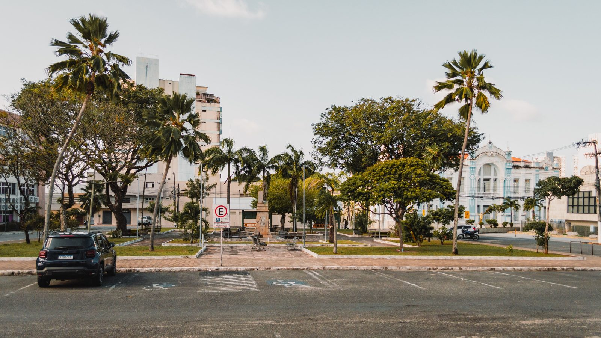

Itapema · Poder Público
Itapema · Poder PúblicoO orçamento de Itapema passou de R$ 1 bilhão, e metade do aumento do ano foi para infraestrutura urbana
De onde vem e para onde vai o dinheiro da cidade.
A Prefeitura publicou em 10 de setembro o edital que entregaria o estacionamento rotativo pago à iniciativa privada por cinco anos, com propostas abertas até 30 de outubro. Quatro dias depois, em 14 de setembro, o secretário de Segurança Pública assinou a revogação do processo. O extrato publicado no Diário Oficial dos Municípios não diz por quê, remete às razões que estão nos autos. Essa era a segunda investida: a licitação de 2022 foi suspensa em novembro de 2023 por causa de uma decisão do Tribunal de Contas do Estado e anulada em junho de 2024, também por determinação do Tribunal.
Em 30 segundos · Modo de Leitura, formato original Santa Informa
Itapema quer entregar a Zona Azul a uma empresa.
O modelo é concessão, com pagamento de outorga.
O prazo do contrato seria de cinco anos.
O edital saiu em 10 de setembro.
As propostas iam até 30 de outubro.
Em 14 de setembro a Prefeitura revogou o processo.
Quatro dias entre publicar e cancelar.
O extrato não diz o motivo.
Fala em razões que estão nos autos.
Quem assinou os dois papéis foi a mesma pessoa.
O secretário de Segurança Pública, Wanderley Dias.
Não é a primeira vez que a licitação para.
Em 2022 teve edital parecido.
Aquele foi suspenso em novembro de 2023.
Motivo: decisão do Tribunal de Contas do Estado.
E foi anulado em junho de 2024.
Também por determinação do Tribunal.
O projeto de agora prevê cerca de 3 mil vagas.
No Centro e na Meia Praia.
Pagamento por aplicativo, PIX, cartão e totem.
A tarifa já está fixada em decreto.
R$ 3,00 por uma hora.
R$ 6,00 por duas horas.
Quem não regularizar paga R$ 30,00.
Teve duas audiências públicas em junho.
A Prefeitura não publicou nota sobre a revogação.
E o verão começa em dezembro.
Poder PúblicoPublicada em Redação Santa Informa

A Prefeitura de Itapema revogou a licitação do estacionamento rotativo pago, a Zona Azul, quatro dias depois de publicar o edital. O aviso da Concorrência Eletrônica 03.006.2026 saiu no Diário Oficial dos Municípios em 10 de setembro, com prazo de concessão de cinco anos e propostas abertas até 30 de outubro. Em 14 de setembro saiu no mesmo Diário o extrato de revogação do Processo Licitatório nº 157/2026, assinado pelo secretário municipal de Segurança Pública, Wanderley Dias, que também tinha assinado o edital. O texto não explica a decisão: diz apenas que ela se baseia nas razões expostas nos documentos anexos aos autos.
O objeto era contratar empresa para implantar e gerir o sistema de estacionamento rotativo inteligente, com material, equipamento e mão de obra por conta dela, por cinco anos. As propostas iam até as 14h de 30 de outubro, com abertura às 14h01 do mesmo dia. O projeto que a Prefeitura apresentou em audiência pública prevê cerca de 3 mil vagas, começando pelo Centro e pela Meia Praia, com controle eletrônico e pagamento por aplicativo, PIX, cartão e totem.
A tarifa já está no papel desde junho. O Decreto nº 187, de 11 de junho de 2026, fixou R$ 3,00 por até 60 minutos e R$ 6,00 por até 120 minutos para carro de passeio. Em áreas especiais, a permanência pode ir a 180 minutos por R$ 9,00 e a 240 minutos por R$ 12,00. Carga e descarga tem 30 minutos livres em operação. Quem descumprir a regra paga a tarifa de regularização, dez vezes a tarifa horária, ou seja, R$ 30,00, com cinco dias úteis para acertar.
Itapema já tinha tentado a mesma coisa. O aviso da Concorrência Pública 03.005.2022, da concessão da chamada Área Azul digital, saiu em 4 de outubro de 2022. Em 13 de novembro de 2023 a então prefeita Nilza Nilda Simas assinou a suspensão do certame, citando a Decisão Singular GAC/AF 714/2023 do Tribunal de Contas do Estado. Em 26 de junho de 2024 veio a anulação, também por determinação do Tribunal. Entre o primeiro edital e a revogação do segundo passaram 1.441 dias, conta nossa.
Sem contrato assinado, nada muda na rua: as vagas do Centro e da Meia Praia seguem gratuitas e sem controle de tempo. O que aperta é o calendário. A temporada começa em dezembro, o edital revogado só abriria as propostas em 30 de outubro, e ainda viriam habilitação, contrato, sinalização e instalação de equipamento antes de a primeira vaga ser cobrada.
O resumo de 30 segundos está no topo e a versão completa é o texto acima. Aqui ficam as três leituras da casa sobre o mesmo assunto.
Clara, a otimista
Tem um jeito bom de ler isso. Prefeitura que revoga a própria licitação quatro dias depois de publicar está, no mínimo, olhando o processo com cuidado antes de assinar contrato de cinco anos. Voltar atrás cedo custa menos do que voltar atrás depois, e a história de 2022 mostra o que acontece quando o problema só aparece lá na frente.
E a Zona Azul, quando vier, resolve uma coisa que quem mora aqui reclama o ano inteiro: no verão o morador não acha vaga perto de casa porque o mesmo carro fica parado na mesma vaga o dia todo. Rotatividade é exatamente isso. Enquanto o edital novo não sai, quem vai ao Centro continua estacionando de graça.
Seu Prudêncio, o criterioso
Merece atenção o calendário. Contrato de concessão de cinco anos não se implanta em quatro semanas: depois da abertura das propostas vem julgamento, habilitação, recurso, homologação, assinatura, sinalização horizontal e vertical, instalação de totens e treinamento de equipe. Com a abertura marcada para 30 de outubro, já estava apertado para operar em janeiro. Sem edital novo, fica mais apertado ainda.
Vale acompanhar o histórico do processo anterior. Quando um certame igual foi suspenso e depois anulado por causa do Tribunal de Contas, o cuidado com o edital seguinte precisa aparecer no documento. A Prefeitura anunciou em junho que mandaria a documentação ao Tribunal antes de publicar, e o que está público não deixa claro se essa etapa foi cumprida nem com qual resultado.
Uma sugestão útil: publicar junto da revogação um resumo das razões, ainda que curto. O extrato remete aos autos, e o morador não tem como abrir os autos. Uma linha explicando resolve, e evita que a cidade fique adivinhando.
Dito isso, revogar antes de contratar é decisão administrativa saudável, e bem melhor do que corrigir depois de assinado. O projeto em si tem base: audiência pública feita em dois bairros, tarifa fixada em decreto antes da licitação e modelo de concessão que não tira dinheiro do caixa municipal.
Caco, o sarcástico
A Zona Azul de Itapema é a obra mais rápida da cidade: leva quatro dias do começo ao fim. Publica na quinta, revoga na segunda, e ninguém precisa nem pintar o meio-fio.
Fui atrás do motivo, porque motivo é a parte interessante. O papel diz que está nos autos. Os autos, por sua vez, estão em outro lugar. Segui a trilha e cheguei onde se costuma chegar nessas horas, que é lugar nenhum.
Agora, para ser justo: até dezembro dá para estacionar de graça na Meia Praia. Reclamar disso seria muita ingratidão.
Fontes: a revogação, a data, o número do processo e a assinatura do secretário Wanderley Dias estão no extrato de revogação do Processo nº 157/2026, publicado pela Prefeitura de Itapema no Diário Oficial dos Municípios de Santa Catarina em 14 de setembro de 2026, edição 5242. O objeto, o prazo de cinco anos e as datas de recebimento e abertura das propostas estão no extrato do edital da Concorrência Eletrônica 03.006.2026, de 10 de setembro de 2026. A justificativa da concessão onerosa e a citação à Lei nº 3.672, de 2017, estão na Justificativa para a Outorga da Concessão Onerosa, de 27 de agosto de 2026. As tarifas estão no Decreto nº 187, de 11 de junho de 2026, que alterou o Decreto nº 56, de 2021. As 3 mil vagas, os bairros Centro e Meia Praia, as formas de pagamento e a etapa seguinte no Tribunal de Contas estão na nota Estacionamento Rotativo é tema de segunda audiência pública, da Prefeitura de Itapema, de 30 de junho de 2026. A tentativa de 2022 está em três documentos do mesmo Diário: o aviso da Concorrência Pública 03.005.2022, de 4 de outubro de 2022, o aviso de suspensão, de 16 de novembro de 2023, que cita a Decisão Singular GAC/AF 714/2023 do Tribunal de Contas do Estado, e o extrato de anulação, de 27 de junho de 2024. A contagem dos 4 dias e dos 1.441 dias é conta nossa.
Itapema · Poder PúblicoDe onde vem e para onde vai o dinheiro da cidade.
 Itapema · Turismo
Itapema · TurismoA outra cobrança que já está valendo nas ruas da cidade.
 Itapema · Turismo
Itapema · TurismoQuem enche o Centro e a Meia Praia na temporada.